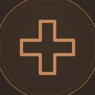

Como o seu perfil vai ficar depois de aplicar a bio, os destaques e os 9 posts. Toque em uma semana para ver a grade crescendo, e toque num post para ampliar.
Gestão + agentes de IA para empresários Diagnóstico antes da tecnologia Especialidade em saúde | Priscila Blandy 👇 Comece pelo diagnósticowa.me/5532991337984

O post 1 é publicado primeiro e fica embaixo à direita. O 9 é o último e fica em cima à esquerda, com a seta do fio apontando para "Como funciona o diagnóstico da gestão". Não fixe posts durante o relançamento: fixar muda a ordem e quebra o painel.
redes/legendas-relancamento.md